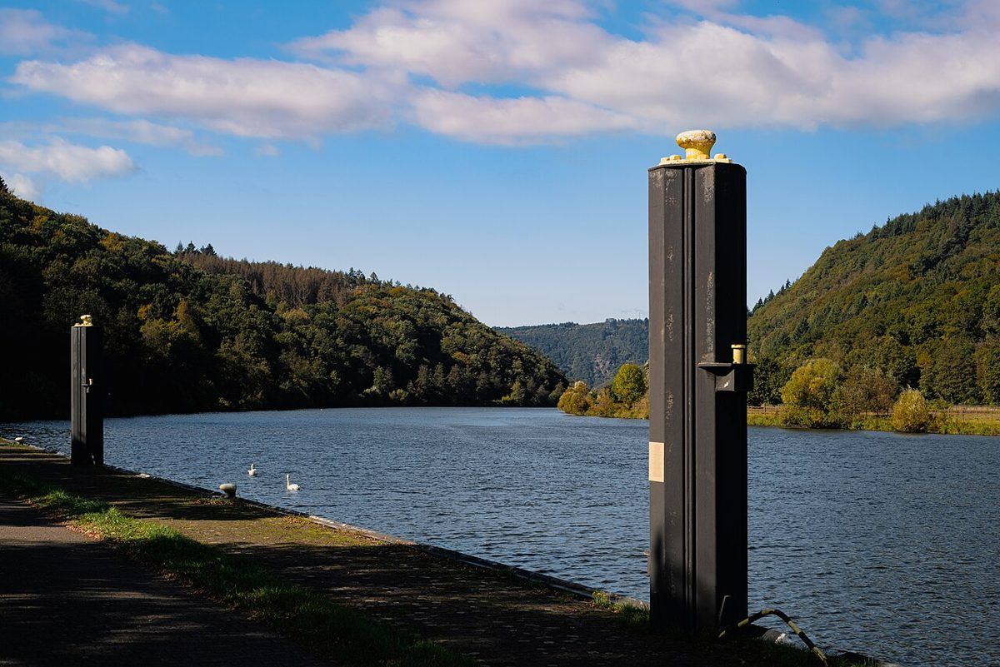

Descubre la belleza natural de la Saarschleife en el Saarland, Alemania

El Saarland, uno de los estados más pequeños de Alemania, esconde un tesoro natural que deja sin aliento a quien lo visita: la Saarschleife. Este meandro del río Saar, conocido como el ‘lazo del Saar’, es una de las postales más icónicas del país. Si estás planeando un viaje a Alemania, no puedes perderte esta maravilla natural. Aquí te contamos todo lo que necesitas saber para disfrutar al máximo de tu visita.
Cómo llegar a la Saarschleife
La Saarschleife se encuentra cerca del pueblo de Mettlach, en el suroeste de Alemania. Si viajas en coche, puedes llegar fácilmente desde ciudades como Saarbrücken (la capital del estado) o Trier. También es posible llegar en transporte público, utilizando trenes y autobuses locales desde Saarbrücken. Aunque el último tramo puede requerir un poco de caminata, el esfuerzo valdrá la pena cuando te encuentres frente a este espectáculo de la naturaleza.
La mejor época para visitar
La Saarschleife es impresionante en cualquier época del año, pero cada estación le ofrece un toque especial. En primavera y verano, el verde intenso de los bosques y el reflejo del río bajo el sol son un deleite visual. En otoño, los tonos dorados y rojizos de los árboles crean un paisaje mágico. Si prefieres menos aglomeraciones, visita durante los meses de otoño o invierno, cuando el ambiente es más tranquilo y las vistas igualmente impresionantes.
Los 5 highlights que no te puedes perder
1. **Mirador Cloef**: Desde este mirador, ubicado en la parte alta del meandro, tendrás la mejor vista de la Saarschleife. Es el lugar perfecto para sacar fotografías increíbles.
2. **Sendero del bosque**: Explora los senderos que bordean el río y sumérgete en la naturaleza. Hay rutas para todos los niveles, desde paseos cortos hasta caminatas más largas.
3. **Barco turístico**: Para vivir la experiencia desde el agua, puedes tomar un paseo en barco que recorre el meandro. Es una perspectiva única y relajante.
4. **Mettlach y la cerámica Villeroy & Boch**: Visita este pintoresco pueblo, conocido por su tradición cerámica. El museo Villeroy & Boch es una parada cultural interesante.
5. **Torre de observación en Orscholz**: Si buscas otra vista panorámica, esta torre ofrece una perspectiva diferente del paisaje.
Qué comer en la región
La gastronomía del Saarland es un reflejo de su ubicación entre Alemania y Francia. No te pierdes platos como Dibbelabbes, una especie de tortilla de patata tradicional, o Lyoner, una salchicha local que se sirve con pan y mostaza. También puedes disfrutar de vinos de la región, especialmente los blancos, que combinan perfectamente con la cocina local. Si visitas Mettlach, aprovecha para probar algunos productos locales en los restaurantes y cafeterías del pueblo.
Conclusión
La Saarschleife es un destino que combina naturaleza, cultura y gastronomía en un solo lugar. Ya sea que busques una escapada tranquila o una aventura al aire libre, este rincón del Saarland te sorprenderá. Planifica tu visita con tiempo, lleva calzado cómodo y prepárate para disfrutar de uno de los paisajes más hermosos de Alemania. ¡Te aseguramos que no te arrepentirás!
Haiktec
- Planificador de Presupuesto y Seguimiento de Gastos para Bodas
- 7 Estrategias Inteligentes para Ahorrar en Casa: Guía Práctica para Hombre
- Planificador de Contenido y ROI para YouTube
Text mit KI erstellt und automatisch geprueft.